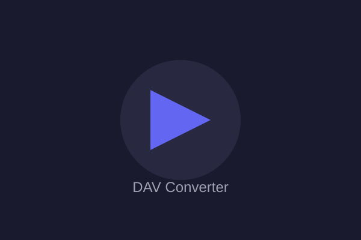

A ferramenta mais rápida e confiável para converter arquivos de sistemas de vigilância. Mantenha a qualidade original e tenha compatibilidade com todos os players.

Desenvolvido especificamente para arquivos de sistemas de segurança
Converta vários arquivos simultaneamente em segundos, não em horas.
Preservamos 100% da qualidade do seu vídeo original.
Converta para AVI, MP4, MKV ou mantenha como DAV.
Script otimizado para Windows, sem necessidade de instalação.
Conversão real de arquivos DAV via motor Python + FFmpeg
Ou clique para selecionar arquivos ou pastas
Escolha a pasta onde estão seus arquivos DAV
Escolha o formato e nome do arquivo final
Clique em converter e pronto!